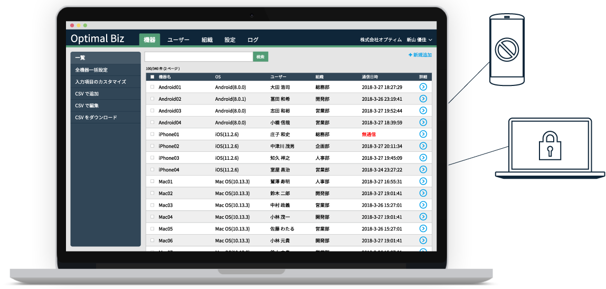
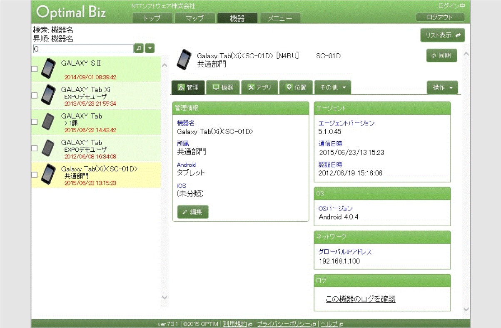
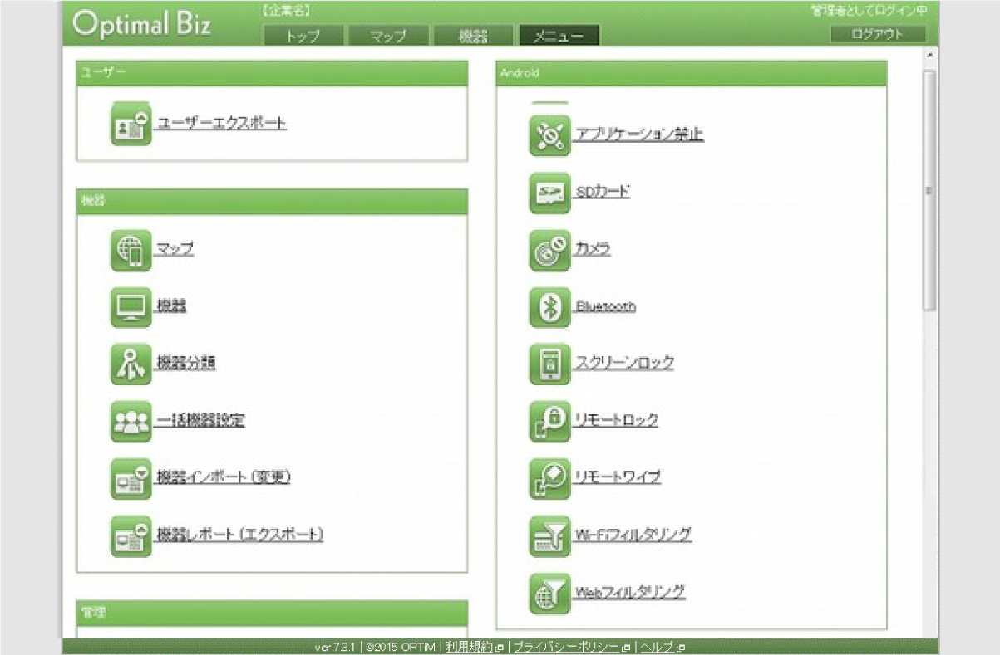
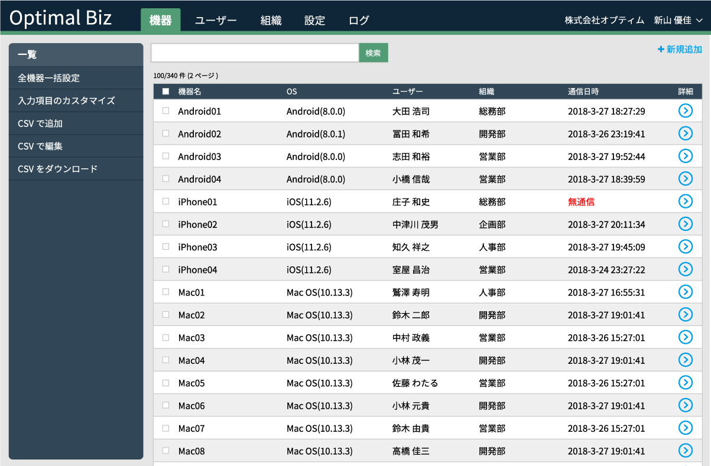
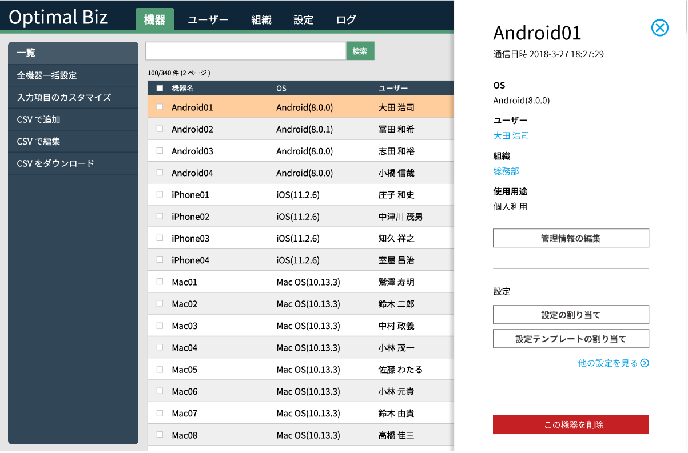

Optimal Biz UIリニュアル
社内端末を管理・遠隔操作するWebアプリケーション「Optimal Biz」のUIリニュアルに携わりました。
- 期間
- 2017年4月 ~ 現在
- チーム構成
- マネージャー1名
- エンジニア3名 (交代制)
- デザイナ兼エンジニア (私)
Optimal Bizとは?
業務で使用しているPCやスマートフォンなどの社内端末を、管理・遠隔操作するためのサービスです。Webアプリケーションから社内端末を一覧したり、端末のロック、初期化などの行うことができます。


課題
目的の画面にたどり着けない
100種類もの機能が「メニュー画面」に集約されており、ユーザーが目的の機能を見つけるまでに多くの時間がかかりました。
プロジェクトが進まない
多くのお客様からユーザビリティ改善のご要望を受けていましたが、具体的な仕様に落とし込むことができず、プロジェクトの進捗は滞っていました。
提案
ユーザーが迷わないUIを検討し、ユーザーテストで効果を検証した上でリニュアルを進めました。


プロセス

情報構造の整理
- 機能をいくつかの画面に分割

UIデザイン
- 画面図作成
- プロトタイプ作成

ユーザテスト
- ユーザーテスト設計、実施、分析
- フィードバックを元に改善提案

エンジニアリング
- システム設計 (要件定義、基本設計)
- Webアプリケーション開発
- UIガイドライン作成
工夫と成果
私はデザイナとエンジニアのタスク状況に合わせて進め方を提案し、両者の橋渡しをしました。例えば、デザイナが忙しいときは、私がUIデザインを作成し、エンジニアに実装を依頼しました。また、エンジニアが忙しいときは、私がアプリケーションを実装しました。
その結果、4年前から進んでいなかったユーザビリティ改善を実施することができました。またお客様から「他社のアプリケーションと比べても、非常に使いやすかった」とお褒めの言葉を頂きました。